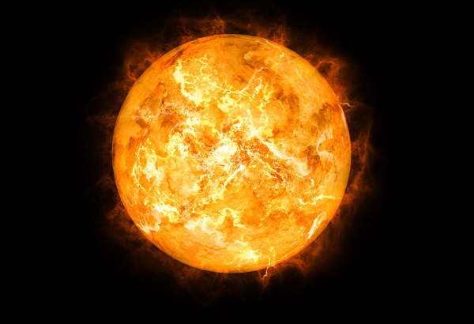
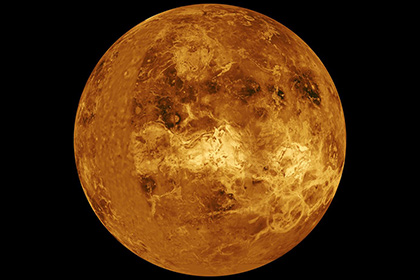
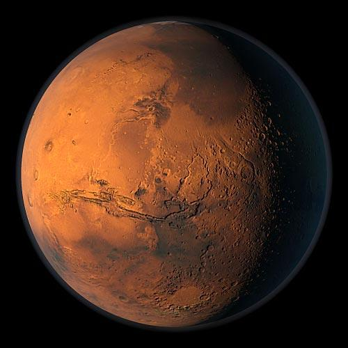
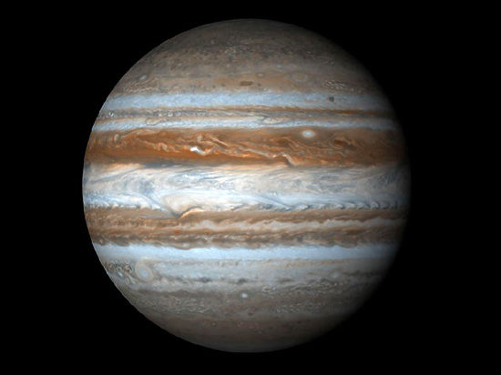
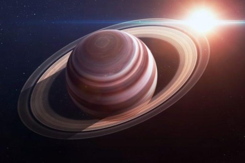
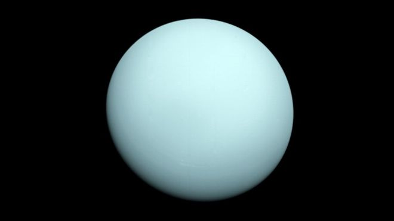
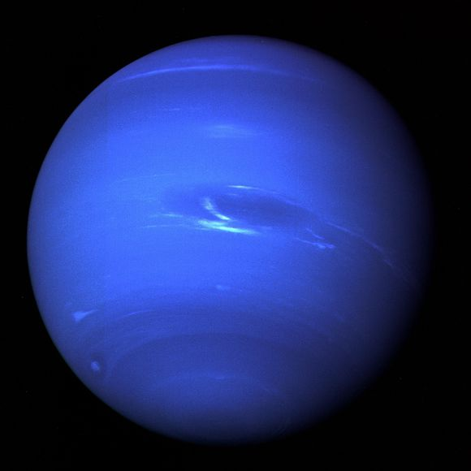
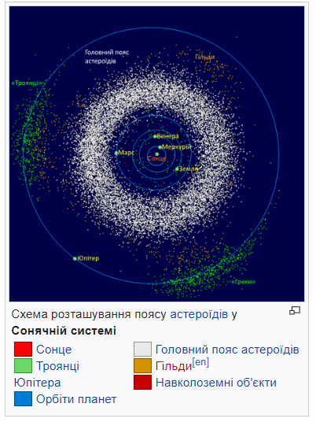

Сонячна система
Со́нячна система — планетна система, що включає в себе центральну зорю — Сонце, і всі природні космічні об'єкти (планети, астероїди, комети, потоки сонячного вітру тощо), які об'єднуються гравітаційною взаємодією. Сонячна система є частиною значно більшого комплексу, який складається із зір і міжзоряної речовини — галактики Чумацький Шлях.Сонце містить ≈99,85% маси Сонячної системи; газові планети-гіганти (Юпітер, Сатурн, Уран і Нептун) складають 99% залишкової маси[8]. Як і в інших зір, у надрах Сонця ефективно відбуваються термоядерні реакції з виділенням енергії[9]. Планети за фізичними характеристиками поділяють на дві групи. Ближче до Сонця розташовані планети земної групи: Меркурій, Венера, Земля, Марс; далі від Сонця розташувались планети-гіганти: Юпітер, Сатурн, Уран, Нептун[10]. Планети земної групи порівняно невеликі, їхня густина ≈5 г/см³; вони складаються переважно з важких хімічних елементів; мають гаряче металеве ядро, оточене мантією із силікатних порід, і верхній шар — кору[11]. Планети-гіганти не мають твердої поверхні, бо за хімічним складом (99 % гідрогену і гелію) і густиною (≈1 г/см³) вони нагадують зорі, а їхня велика маса спричиняє нагрівання ядер до температури понад +10 000 °С.
Сонце

Сонце — єдина зоря Сонячної системи та її головний компонент. Його маса (332 900 мас Землі) досить велика для підтримання термоядерних реакцій синтезу в його надрах, внаслідок яких вивільняється велика кількість енергії, що випромінюється в простір здебільшого у вигляді електромагнітного випромінювання, максимум якого припадає на діапазон хвиль довжиною 400—700 нм, який відповідає видимому світлу.
Планети земної групи
Планети земної групи. Зліва направо: Меркурій, Венера, Земля і Марс (розміри в масштабі, міжпланетні відстані — ні).Чотири внутрішні планети складаються переважно з важких елементів, мають мало супутників, у них відсутні кільця. Значною мірою вони складаються з тугоплавких мінералів, таких як силікати, що формують їхню мантію та кору, і металів (таких як залізо й нікель), що формують їхнє ядро. У трьох внутрішніх планет — Венери, Землі і Марса — є атмосфера; у всіх є ударні кратери, тектонічні деталі поверхні (такі як рифтові западини) й вулкани
Меркурій

Меркурій є найближчою до Сонця (0,4 а.о.) й найменшою планетою системи (0,055 маси Землі). У Меркурія немає супутників, а його найпомітнішими, після ударних кратерів, деталями рельєфу є численні криволінійні уступи довжиною до сотень кілометрів і висотою до 3 км. Ймовірно, вони виникли при стисканні планети внаслідок поступового остигання її надр.Меркурій має вкрай розріджену атмосферу. Вона складається з атомів, «вибитих» із поверхні планети сонячним вітром. Велике залізне ядро Меркурія та його тонка кора ще не отримали належного пояснення. Є гіпотеза, яка припускає, що зовнішні шари планети, які складаються з легких елементів, було зірвано внаслідок гігантського зіткнення, яке зменшило розміри планети[46], а також запобігло повному поглинанню Меркурія молодим Сонцем.
Венера

Венера близька за розміром і масою до Землі (її маса становить 0,815 земної). Як і Земля, вона має потужну атмосферу та товсту силікатну оболонку навколо залізного ядра. На поверхні Венери є яскраві ознаки колишньої геологічної активності, в першу чергу вулканізму. Води в складі Венері майже нема, а її атмосфера в дев'яносто разів щільніша за земну. Це найгарячіша планета: температура її поверхні перевищує 400 °C. Причиною цього є парниковий ефект у щільній, багатій на вуглекислий газ атмосфері[47]. Надійних ознак сучасної ендогенної геологічної активності на Венері не виявлено[джерело?], але, оскільки у неї немає магнітного поля, яке запобігло б виснаженню її наявної атмосфери, це дозволяє припустити, що її атмосфера регулярно поповнюється вулканічними виверженнями. Природних супутників у Венери немає.
Земля

Земля є найбільшою та найщільнішою серед внутрішніх планет. У Землі є один природний супутник — Місяць, це єдиний великий супутник планет земної групи. Серед планет земної групи Земля є унікальною (насамперед — гідросферою). Атмосфера Землі радикально відрізняється від атмосфер інших планет — вона містить вільний кисень. Питання про наявність життя де-небудь, крім Землі, залишається відкритим.
Марс

Марс менший за Землю та Венеру (0,107 маси Землі). Він має атмосферу, що складається переважно з вуглекислого газу, з поверхневим тиском 6,1 мбар (0,6 % від земного). На його поверхні є вулкани, найбільший із яких, Олімп, перевищує розмірами всі земні вулкани, досягаючи висоти 21,2 км[48]. Рифтові западини (долини Марінера) свідчать про колишню тектонічну активність. Сучасної тектонічної та вулканічної активності на Марсі не зареєстровано, але, за деякими оцінками, Олімп востаннє вивергався не більше 2 млн років тому. Червоний колір поверхні Марса зумовлений великою кількістю оксиду заліза в його ґрунті. Планета має два супутники — Фобос і Деймос. Припускається, що вони являють собою захоплені астероїди.
Зовнішня область Сонячної системи
Зовнішня область Сонячної системи Зовнішня область Сонячної системи є місцем розташування газових гігантів та їхніх супутників, а також транснептунових об'єктів, астероїдно-кометно-газових об'єктів поясу Койпера, Розсіяного диска і хмари Оорта. Орбіти багатьох короткоперіодичних комет, а також астероїдів-кентаврів, також проходять в цій області. Тверді об'єкти зовнішньої області через велику відстань від Сонця, а отже, набагато нижчу температуру, містять лід води, аміаку і метану.
Юпітер

Юпітер має масу, в 318 разів більшу від земної, і є в 2,5 рази масивнішим від усіх інших планет разом узятих. Він складається здебільшого з водню і гелію. Висока внутрішня температура Юпітера викликає появу численних напівпостійних вихрових структур в його атмосфері, таких як смуги хмар і Велика червона пляма.Юпітер має 67 супутників. Чотири найбільших — Ганімед, Каллісто, Іо та Європа — подібні до планет земної групи такими явищами, як вулканічна активність і внутрішнє нагрівання. Ганімед, найбільший супутник в Сонячній системі, за розмірами перевищує Меркурій.
Сатурн

Сатурн відомий своєю системою кілець, має структуру атмосфери і магнітосфери, дещо подібну до відповідних структур Юпітера. Хоча об'єм Сатурна дорівнює 60 % об'єму Юпітера, маса (95 мас Землі) — менша від третини маси Юпітера; таким чином, Сатурн — найменш щільна планета Сонячної системи (його середня густина менша за густину води).Сатурн має 62 підтверджених супутники; два з них — Титан і Енцелад — проявляють ознаки геологічної активності. Ця активність, однак, не подібна до земної, оскільки значною мірою обумовлена активністю льоду. Титан, який за розмірами більший за Меркурій, — єдиний супутник в Сонячній системі, що має атмосферу.
Уран

Уран з масою, в 14 разів більшою, ніж у Землі, є найлегшою із зовнішніх планет. Унікальним серед інших планет його робить те, що він обертається «лежачи на боці»: нахил осі його обертання до площини екліптики дорівнює приблизно 98°. Якщо інші планети можна порівняти з дзиґою, що обертається, то Уран більше схожий на кульку, яка котиться. Він має набагато холодніше ядро, ніж інші газові гіганти, і випромінює в космос дуже мало тепла.Відкрито 27 супутників Урана; найбільші з них — Титанія, Оберон, Умбріель, Аріель і Міранда.
Нептун

Нептун хоча і дещо менший від Урана, але масивніший (17 мас Землі) і тому щільніший. Він випромінює більше внутрішнього тепла, але не так багато, як Юпітер чи Сатурн.Нептун має 14 відомих супутників. Найбільший з них — Тритон, є геологічно активним, з гейзерами рідкого азоту. Тритон — єдиний великий супутник, що рухається в зворотному напрямку. Також Нептун супроводжують астероїди, що називаються троянцями Нептуна, які перебувають з ним в резонансі 1:1.
Групи астероїдів

Групи астероїдів Астероїди об'єднують у групи та сім'ї на основі характеристик їхніх орбіт. Супутники астероїдів — астероїди, що обертаються по орбіті навколо інших астероїдів. Вони не визначаються так очевидно, як супутники планет, оскільки іноді бувають майже настільки ж великими, як і їхній компаньйон. Пояс астероїдів також містить комети головного поясу астероїдів, які, можливо, були джерелом води на Землі.Троянські астероїди розташовані в точках Лагранжа L4 і L5 Юпітера (гравітаційно стійкі регіони впливу планети, що переміщуються разом із нею по її орбіті); термін «троянці» також застосовується для астероїдів, що перебувають у точках Лагранжа будь-яких інших планет або супутників (крім троянців Юпітера, відомі троянці Нептуна, Землі, Урана та Марса). Астероїди сім'ї Гільди[en] перебувають у резонансі з Юпітером 2:3, тобто роблять три оберти навколо Сонця за час двох повних обертів Юпітера.Також у внутрішній Сонячній системі є групи астероїдів з орбітами, розташованими між Меркурієм та Марсом. Орбіти багатьох із них перетинають орбіти внутрішніх планет. Деякі з них є потенційно небезпечними об'єктами.